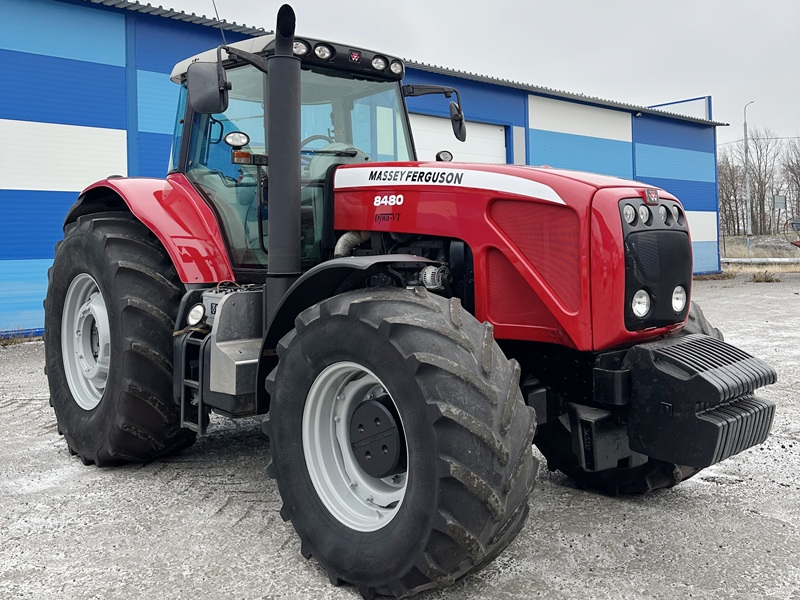

Massey Ferguson 8480

Massey Ferguson 8480 – це легендарний важкий трактор, який на момент свого випуску був флагманом лінійки MF і вважався одним із найкращих у своєму класі. Завдяки величезному крутному моменту, цей трактор став ідеальним інструментом для найважчих польових робіт: глибокої оранки, дискування та роботи з великогабаритними посівними комплексами.
Головною особливістю моделі 8480 є безступінчаста трансмісія Dyna-VT (розробка Fendt), яка забезпечує плавну передачу потужності на колеса без розриву потоку та дозволяє точно підбирати швидкість під будь-яке навантаження. Трактор вирізняється потужною задньою навіскою вантажопідйомністю до 10 тонн та продуктивною гідросистемою з закритим центром. Кабіна Panoramic забезпечує оператору преміальний комфорт, низький рівень шуму та відмінну оглядовість, що робить довгі робочі зміни менш виснажливими.
| Параметр | Характеристика |
|---|---|
| Клас тяги | 5.0 |
| Тип ходової частини | колісний |
| Колісна формула | 4х4 (повний привід) |
| Тип рами | рамна |
| Основне призначення | важкі енергоємні сільськогосподарські роботи: глибока оранка, суцільна культивація, посів широким захватом, транспортування важких вантажів |
| Параметр | Значення |
|---|---|
| Модель | SisuDiesel 84 CTA (Tier 3) |
| Тип двигуна | шестициліндровий дизель з турбонаддувом та проміжним охолодженням (Intercooler) |
| Спосіб охолодження | рідинне (водяне) |
| Розташування циліндрів | рядне, вертикальне (6 циліндрів) |
| Діаметр циліндра/хід поршня | 111 мм / 145 мм |
| Робочий об’єм | 8,4 л |
| Номінальна потужність | 213 кВт (290 к.с.) |
| Максимальна потужність | 232 кВт (315 к.с.) |
| Номінальні оберти | 2200 об/хв |
| Система пуску | електростартер |
| Питома витрата палива | 195–205 г/кВт.год |
| Параметр | Значення |
|---|---|
| Муфта зчеплення | мокра багатодискова (керується електронікою) |
| Тип КПП | Dyna-VT (безступінчаста трансмісія / CVT) |
| Кількість передач | безступінчаста (2 діапазони: робочий та транспортний) |
| Діапазон швидкостей (вперед) | 0,03 – 50 км/год |
| Діапазон швидкостей (назад) | 0,03 – 38 км/год |
| Вал відбору потужності | задній незалежний, 540Е / 1000 об/хв |
| Параметр | Характеристика |
|---|---|
| Тип коліс | пневматичні шини низького тиску |
| Марка шин (стандарт) | передні: 600/70 R28; задні: 710/75 R42 |
| Радіус ведучого колеса (заднього) | 1,05 м |
| Кількість коліс | 4 (передні меншого діаметру) |
| Ведучі мости | обидва (підключення переднього мосту автоматичне/примусове) |
| Параметр | Характеристика |
|---|---|
| Під час роботи з навантаженням | 42,0 – 55,0 кг/год |
| Під час холостих переїздів | 12,0 – 15,0 кг/год |
| Під час зупинок (холостий хід) | 3,5 – 4,5 кг/год |
| Параметр | Значення |
|---|---|
| Маса експлуатаційна (без баласту) | 10 340 кг |
| Максимальна дозволена маса | 15 000 кг |
| Довжина / Ширина / Висота | 5650 мм / 2550 мм / 3380 мм |
| Колія (перед./зад.) | 1800-2100 мм / 1800-2300 мм |
| База | 3100 мм |
| Дорожній просвіт | 535 мм |
| Мінімальний радіус повороту | 5,5 м |
| Тип навісного пристрою | задній гідравлічний, триточковий з електронним управлінням (ELC) |
| Об’єм паливного баку | 600 л |
| Параметр | Значення |
|---|---|
| Особливості кабіни | Panorama (шумоізольована 71 дБ), кондиціонер, підресорена підвіска кабіни, пневматичне сидіння |
| Гальма | дискові мокрого типу в масляній ванні, з гідроприводом; стоянкове гальмо — ручне |
| Електрообладнання | акумулятори 12 В (2 шт.), генератор 150 А |
| Начіпний пристрій | задня навіска категорія 3/4, вантажопідйомність — 10 500 кгс |